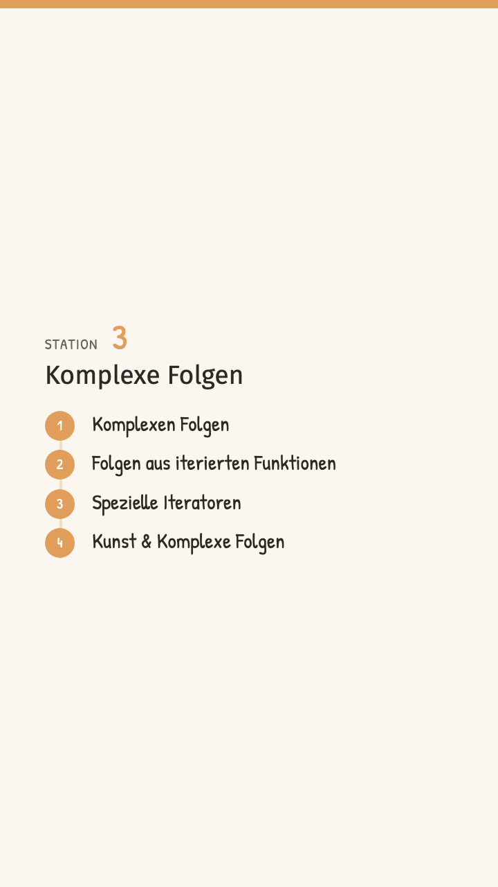

EinstiegKomplexe Folgen

Dunkel — hier stehen SieHell — die übrigen Etappen des KapitelsHilfe — eine Erklärung, wenn es klemmtBonus — freiwillig, zum WeiterdenkenOben angehängt heisst: vor der Etappe, unten: danach

Dunkel — hier stehen SieHell — die übrigen Etappen des KapitelsHilfe — eine Erklärung, wenn es klemmtBonus — freiwillig, zum WeiterdenkenOben angehängt heisst: vor der Etappe, unten: danach